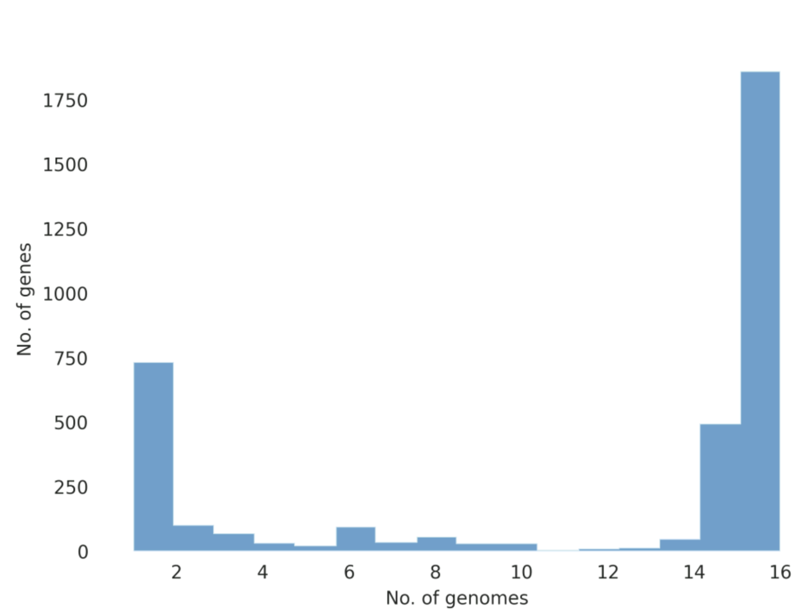
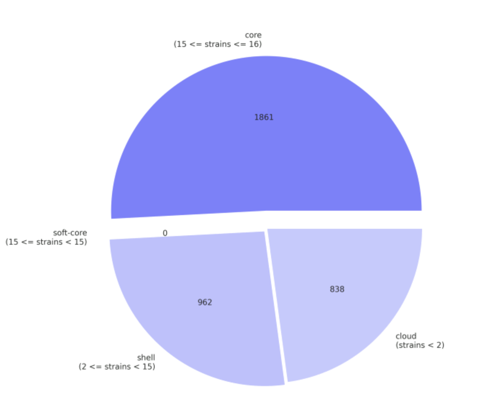
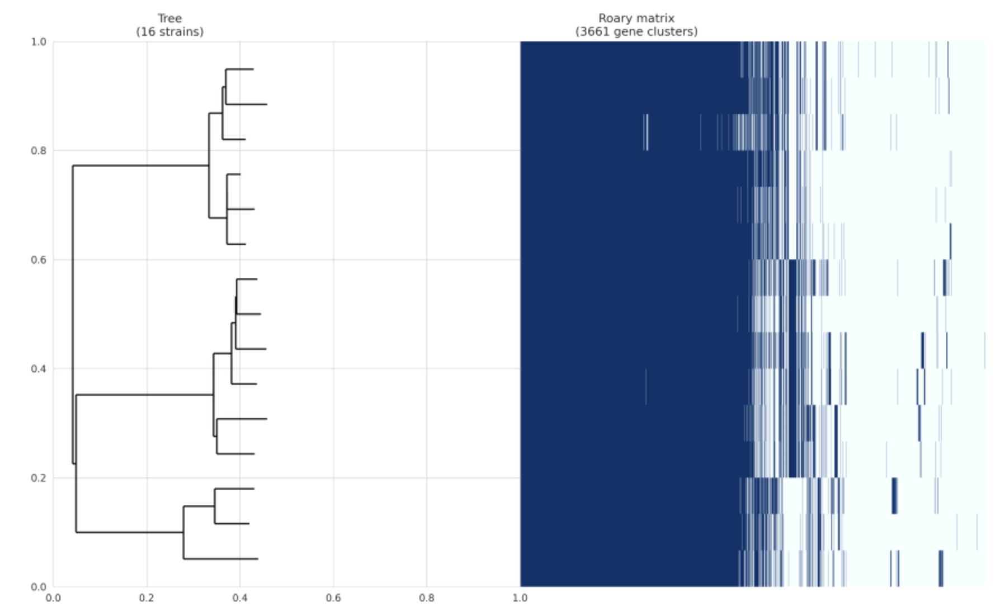
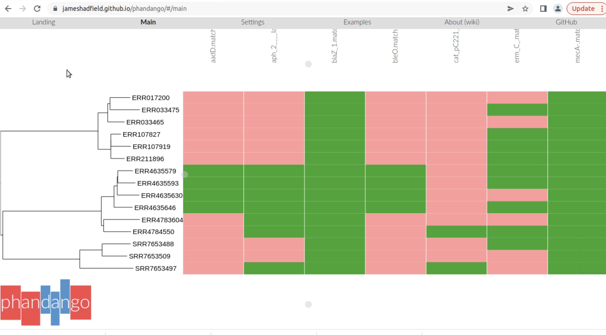

Module 3
Core and accessory genomes with Roary
Read about Roary here.
Roary is a high speed stand alone pan genome pipeline, which takes annotated assemblies in GFF3 format (produced by Prokka (Seemann, 2014)) and calculates the pan genome. Using a standard desktop PC, it can analyse datasets with thousands of samples, something which is computationally infeasible with existing methods, without compromising the quality of the results. 128 samples can be analysed in under 1 hour using 1 GB of RAM and a single processor. To perform this analysis using existing methods would take weeks and hundreds of GB of RAM. Roary is not intended for meta-genomics or for comparing extremely diverse sets of genomes.
docker run --rm -it -v $(pwd):$(pwd) sangerpathogens/roary roary -f /home/ubuntu/Data/roary /home/ubuntu/Data/annotations/*/*.gffThe summary output is present in the summary_statistics.txt
Core genes (99% <= strains <= 100%) 1861
Soft core genes (95% <= strains < 99%) 0
Shell genes (15% <= strains < 95%) 962
Cloud genes (0% <= strains < 15%) 838
Total genes (0% <= strains <= 100%) 3661
Additionally, Roary produces a gene_presence_absence.csv file that can be opened in any spreadsheet software to manually explore the results. In this file, you will find information such as gene name and gene annotation, and, of course, whether a gene is present in a genome or not.
Drop the accessory_binary_genes.fa.newick and gene_presence_absence.csv files in Phandango

When you analyze your own data, you will need a phylogeny that represents the evolutionary history of your isolates. The inference of a phylogenetic tree is not part of roary’s functions, but you can use the core gene alignment (file: core_gene_alignment.aln) as input to infer a tree.
Roary comes with a python script that allows you to generate a few plots to graphically assess your analysis output. You will need the gene_presence_absence.csv file and the phylogeny at /home/ubuntu/Data/trees/tree.nwk.
You should get three files: a pangenome matrix, a frequency plot, and a pie chart.
python /home/ubuntu/Software/roary_plots.py /home/ubuntu/Data/trees/tree_for_phandango.nwk /home/ubuntu/roary/gene_presence_absence.csv



Bacterial genomes data analysis with ARIBA and Pathogenwatch
Part 1: Antimicrobial resistance identification using ARIBA
The first part of this exercise is broadly based on a tutorial by Martin Hunt.
Introduction
ARIBA is a tool that identifies antibiotic resistance genes. This tutorial will walk you through the analysis of the Staphylococcus aureus data set used in the paper:
Novel multidrug-resistant sublineages of Staphylococcus aureus clonal complex 22 discovered in India
Abrudan, Shamanna et al, mSphere 2023 https://doi.org/10.1128/msphere.00185-23
Learning outcomes By the end of this tutorial you can expect to be able to:
• Download and prepare the standard AMR databases for use with ARIBA
• Prepare your own database for use with ARIBA
• Perform QC on input data and understand why QC is important
• Run ARIBA on several samples to identify antibiotic resistance
• Understand the different flags produced by ARIBA
• Summarise ARIBA results for several samples
• Query the AMR results produced by ARIBA
• Use Phandango to visualise ARIBA results
This module comprises the following sections:
1. Run ARIBA on a reference database
2. View summarized results using Phandango
You can run the commands in this module in the Amazon EC2 instance you were provided by your course instructor.
ARIBA should be already installed on this machine. If you need to use a different machine, please follow the instructions from Module 1 of this course.
1. Run ARIBA on a reference database
Configure the Resfinder and CARD reference databases.
ariba getref resfinder out.resfinder
ariba prepareref -f out.resfinder.fa -m out.resfinder.tsv out.resfinder.prepareref
ariba getref card out.card
ariba prepareref -f out.card.fa -m out.card.tsv out.card.prepareref
How to run on one sample
ARIBA needs the database directories, for eg, out.resfinder.prepareref or out.card.prepareref, and two sequencing reads files reads.1.fastq.gz and reads.2.fastq.gz. The command to run ARIBA is:
ariba run out.resfinder.prepareref reads.1.fastq.gz reads.2.fastq.gz outdir
The above command will make a new directory called outdir that contains the results.
Run ARIBA on all samples
The S. aureus dataset consists of many samples, and we need to run ARIBA on each sample, which can be done with a “for” loop. We assume that the reads files are named like this:
name1_1.fastq.gz name1_2.fastq.gz
name2_1.fastq.gz name2_2.fastq.gz
name3_1.fastq.gz name3_2.fastq.gzThen we can run ARIBA on all samples like this (you may need to edit this command depending on how your own files are named):
Eg:
for sample in `ls *.1.fastq.gz | sed 's/\.1.fastq.gz//'`
do
ariba run out.resfinder.prepareref $sample_1.fastq.gz $sample_2.fastq.gz $sample.ariba
doneThe output directory of each sample is called $sample.ariba, for example name1.ariba is the output directory for sample name1.
EXERCISE: Using the information above, write a script to fit the file names and paths in your own context and run ARIBA on all samples.
ARIBA output
The format of the output files are described here.
Viewing ARIBA results in Phandango
This section describes how to use Phandango to view a summary of ARIBA results from many samples.
The most important output file from ARIBA is the report called report.tsv. For this tutorial, we have all sample reports in the directory /home/ubuntu/Data/ARIBA_output
ls /home/ubuntu/Data/ARIBA_output | wc -lARIBA has a functon called “summary” that can summarise presence/absence of sequences and/or SNPs across samples. It takes at least two ariba reports as input, and makes a CSV file that can be opened in your favourite spreadsheet program, and also makes input files for Phandango. The two Phandango files (a tree and a CSV file) can be dropped straight into the Phandango page for viewing.
The tree that ARIBA makes is based on the CSV file, which contains results of presence/absence of sequence and SNPs, and other information such as percent identity between contigs and reference sequences. This means that it does not necessarily represent the real phylogeny of the samples. It is more accurate to provide a tree built from the sequencing data. For this reason, we will use a pre-computed tree file /home/ubuntu/Data/tree_for_phandango.tre.
Basic usage of ariba summary
Check the options of ariba summaryusing the following command:
ariba summary -h
First, let’s run ariba summary using the default settings, except we will skip making the tree:
ariba summary --no_tree out /home/ubuntu/Data/ARIBA_output/*.tsv
We can see that this made two files:
ls out.*
They are the same except for the first line, which has Phandango-specific information. ARIBA uses the filenames as sample names in the output:
head -n 2 out.phandango.csvThe first name is “/home/ubuntu/Data/ARIBA_output/*/sample.tsv”, and the rest are named similarly.
This is not ideal, as it will look ugly in Phandango. Further, the names must exactly match the names in the tree file for Phandango to work (have a look in the tree /home/ubuntu/Data/trees/tree_for_phandango.nwk). You could do a little hacking here using the Unix command sed on the CSV file. Instead, we can supply ARIBA with a file of filenames that also tells ariba what to call the samples in its output CSV files. Instead of “/home/ubuntu/Data/ARIBA_output/sample.tsv”, we would like to simply use “sample”, which is cleaner and matches the tree file. It also means we can (and will) repeatedly run ariba summary with different options, and get output files that can be loaded straight into Phandango. This is one way to make the file with the naming information:
ls /home/ubuntu/Data/ARIBA_output/*/report.tsv | awk -F/ '{name=$(NF-1); sub(/\.ariba$/, "", name); print $0, name}' > ARIBA_output/filenames.fofnThe file is quite simple. Column 1 is the filename, and column 2 is the name we would like to use in the output.
head ARIBA_output/filenames.fofnNow we can rerun summary using this input file. Note the use of the new option –fofn.
ariba summary --no_tree --fofn ARIBA_output/filenames.fofn ARIBA_output/out /home/ubuntu/Data/ARIBA_output/*/report.tsvCheck that the renaming worked:
head -n 2 out.phandango.csvNow go to Phandango and drag and drop the files out.phandango.csv and trees/tree_for_phandango.nwk into the window. The result should like this

This a very high-level summary of the data. For each cluster, it is simply saying whether or not each sample has a ‘match’. Green means a match, and pink means not a match. For presence/absence genes, this means that the gene must simply be there to count as a match. If it is a “variant only” gene, then the gene must be there and one of the variants that we told ARIBA about earlier when generating the ARIBA database.
More information per cluster
In addition to a simple “yes” or “no” as to whether a sample “matches” a given cluster (as explained above), more columns can be output for each cluster. See the ARIBA summary wiki page for a full description of the options.
Variants In the previous screenshot, where the option –preset cluster_all, there are two variant columns: “known_var” and “novel_var”. Green means “yes” and pink means “no”.
Part 2: Antimicrobial Resistance Identification using Pathogenwatch
Browse the public collection:
https://pathogen.watch/collection/mxebr8oz0wjm-module2-s-aureus
Download the AMR genes and AMR SNPs.
Part 3: Compare results obtained with ARIBA Resfinder versus Pathogenwatch
Open the ARIBA summary files and compare them with the AMR genes and AMR SNPs files you downloaded from Pathogenwatch.
Which tool produced more results? Why?
Which tool would you use to report AMR in your collection of S. aureus?
A Python script that compares the ARIBA Resfinder summary result with the Pathogenwatch AMR genes result is available on Github: https://github.com/monicaiabrudan/bacterial-genomics/blob/main/Compare_AMR_files.ipynb
The input files can be found here: https://github.com/monicaiabrudan/bacterial-genomics/tree/main/Compare_AMR_files